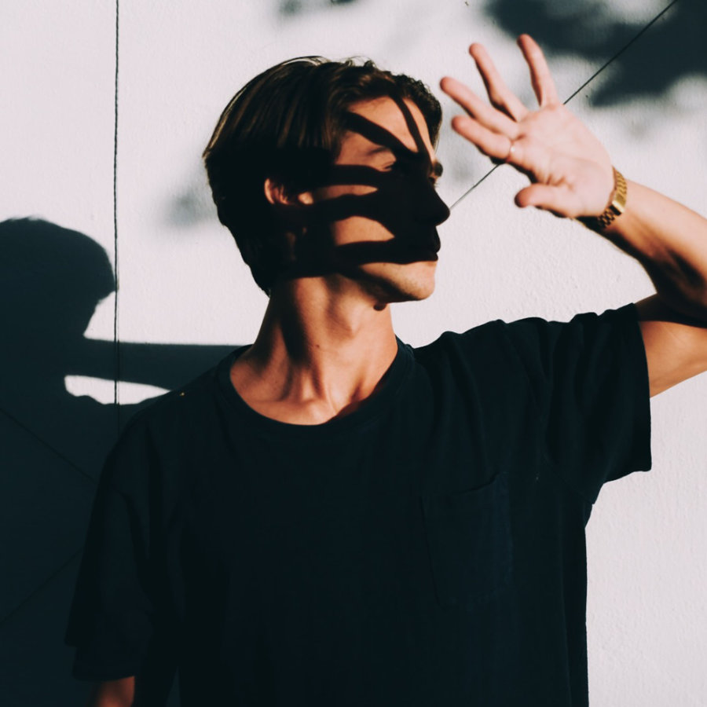
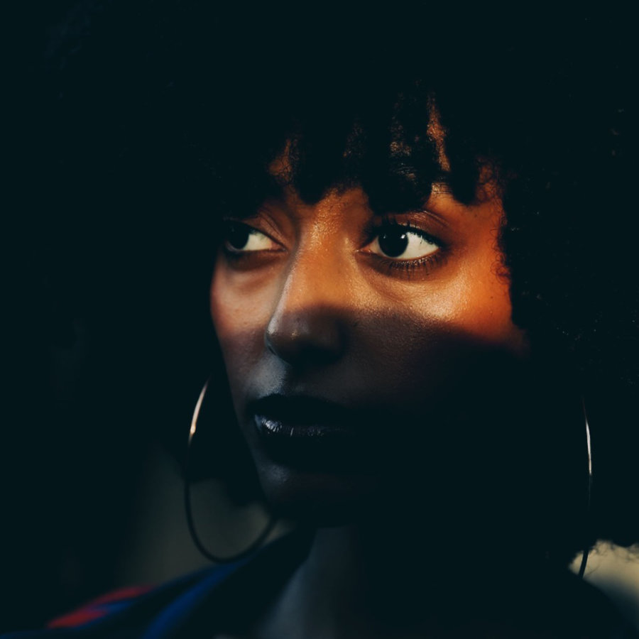
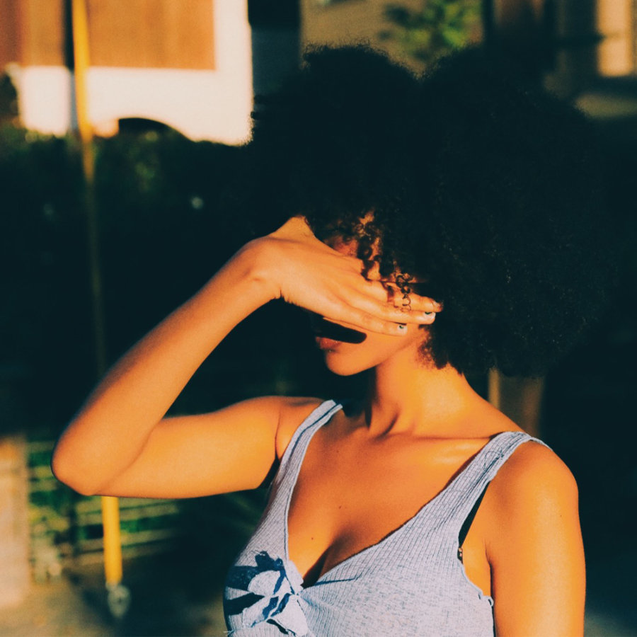

Image Rotator
Using the below images, make a rotator in the box below that shows only one of the Katarina skins every 3 seconds. The rotator should also display the correct image title and description with each image change.
It would be really awesome if the slides animated between one another!
Man eyes
Bonbon cake candy canes lemon drops liquorice.
Man with hand covering face
Soufflé pudding powder sesame snaps dragée biscuit wafer fruitcake.
Woman eyes
Cotton candy donut tiramisu cupcake.
Woman with hand covering face
Oat cake bonbon sesame snaps cupcake lollipop cake lollipop. Powder tootsie roll danish cake. Carrot cake oat cake toffee cake sweet.
Rotator Here